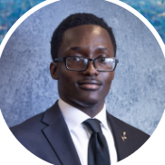

About Artemis
Four students, one weekend, one goal: a blind developer builds and runs real software by voice and keyboard, with no sighted help.
- 4
- people, each owning one part
- 6
- parts, from voice to runner
- 49
- pull requests merged by 8 AM Saturday
Why we built it
Coding tools are built around the screen. You scan a diff, click a button, spot the red line in a terminal. A screen reader can read those things aloud, but the tools were never designed to be heard, so blind developers end up working around them or asking someone to look.
Artemis starts from the other side. Speech and the screen reader are the main interface, not an add-on. A developer should be able to open a project, ask for a change, review it, run it and find out what went wrong, without looking at the screen.
What we hold to
- You decide every change
- Nothing is written or run without your keypress. An approval covers one exact edit, and a spoken "yes" never counts, so a misheard word can't change your code.
- Every result is real
- Programs really run, and you hear what they actually printed. Echo Check reads the page's real accessibility tree instead of guessing what the screen shows.
- Errors are never softened
- When a run fails, you hear the exit code and the first error line, word for word, before any explanation.
- Your screen reader comes first
- Artemis speaks in your own NVDA voice, never over it, and every control works from the keyboard.
The team
David Ribeiro
Team lead. Built the Claude coding agent and the safety gate: paths stay inside your project, approvals bind to the exact change, and a security scan blocks risky code.
Avery
Built the core that tracks every task and approval, the runner that executes approved programs, Echo Check and the launcher. Reviews every pull request.
Jun Olea
Built the Windows app: keyboard-first controls, focus that moves to the approval dialog and back, and the push-to-talk shortcut that works from any app.

Yaovi Agblami
Built the voice: speech recognition that stays on your computer, listening tones, and spoken output through NVDA or the Windows voice, never both. Built this site. Presenter.
How it came together
- First commitThe repository opens. Within an hour the team agrees on the stack, the folder owners and a shared board for every coding agent.
- The first pieces landA keyboard-first app skeleton, spoken announcements with listening tones, and a first version of the coding agent.
- The core comes onlineThe first version of the service that joins every part goes in. This site goes up minutes later.
- Echo CheckArtemis can open a web page and report its real accessibility problems, most serious first.
- Real agent, real scanClaude starts planning real changes, and every proposed program is scanned for security problems before it can run.
- Push-to-talkHold a shortcut from any app to speak a request (today it is Ctrl+Shift+Space). A blocked approval now opens with Reject focused.
- Security scan on requestAsk Artemis to scan a whole project, and the scan can't be quietly switched off.
Open source
All of Artemis, including this site, is on GitHub.